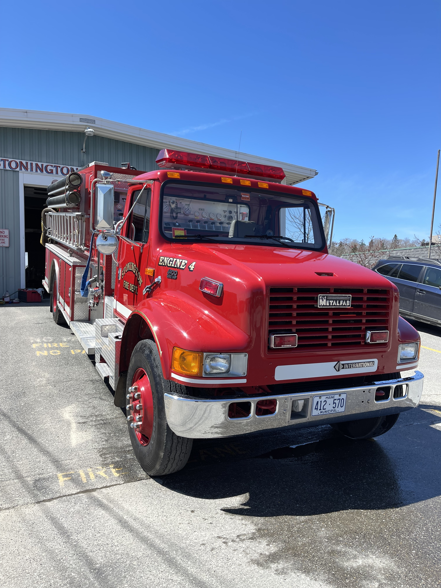
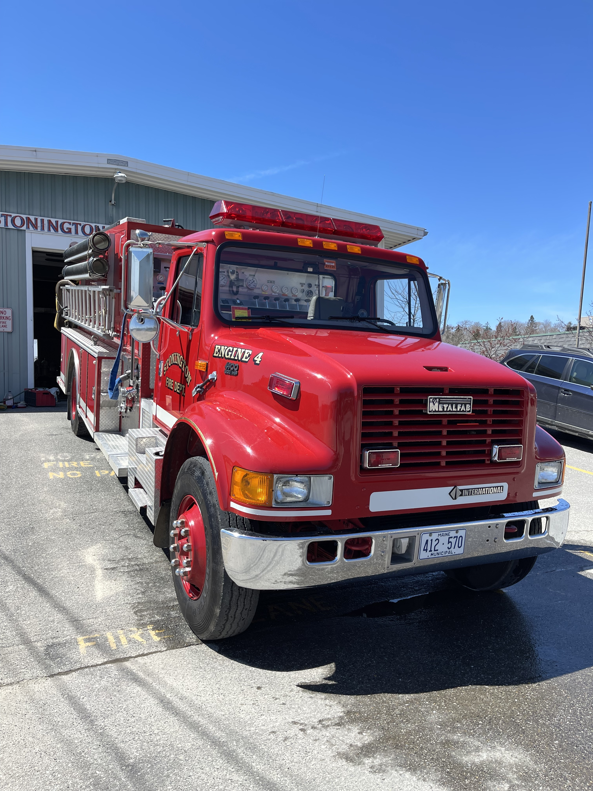

Engine 4
Stats:
Year: 1996
Chasis: Navistar 4900
Engine: Navistar DT530
Transmission: Allison MD3060P
Model: Metalfab WAS14
Tank: 1400 gallon
Pump: 1250gpm Waterous CMYBX-1250
Controls: Midship
Photos:
 

Tanker 2
Stats:
Year: 2010
Chasis: International 4400
Engine: International MaxxForce 330
Transmission: Allison EVS 3000
Model: E-One
Tank: 2000 gallon
Pump: 1250gpm Waterous CX-1250
Photos:

Utility 4
Stats:
Year: 1993
Chasis: Ford F-350 XL 4x4
Photos:


Tanker 1
Stats:
Year: 1986
Chasis: Ford F-8000
Engine: Caterpiller 3208N V8
Transmission: Dana-Spicer CM 5852-A 5+2 "Short Four"
Rear Axle: Eaton 23221
Model: S&S Tank Co.
Tank: 2000 gallon
Pump: 750gpm W.S. Darley & Co.
Photos: